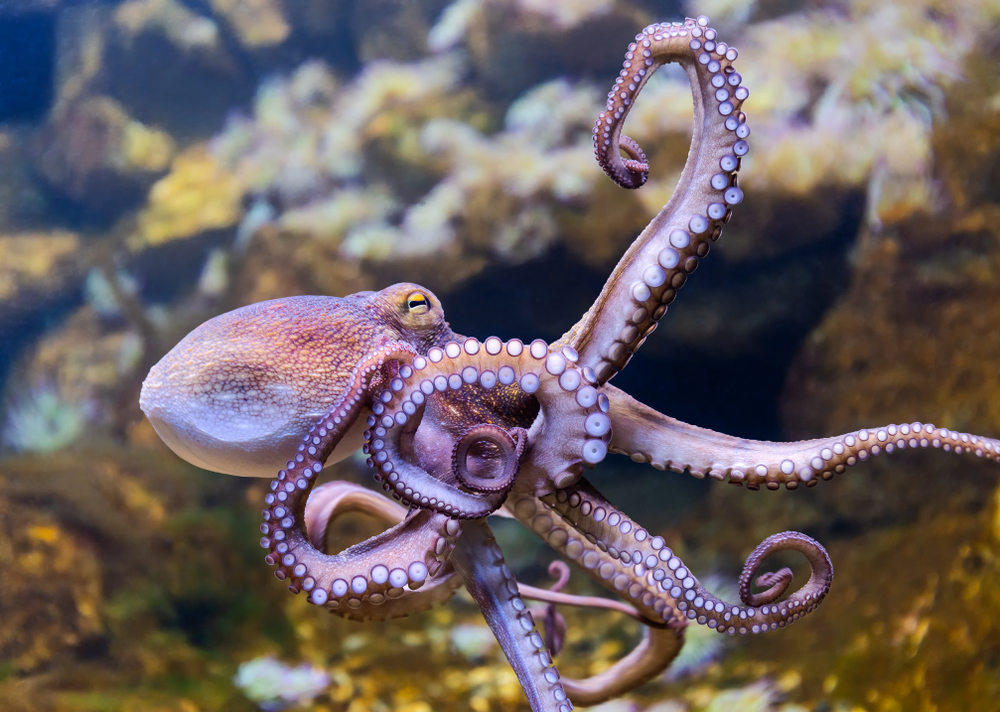

| Description physique |
La baleine est un mammifère marin appartenant à la grande famille des cétacés, dont on dénombre deux catégories : les mysticètes incluant les baleines à fanons, et les odontocètes regroupant les baleines à dents.
La baleine est un mammifère très imposant : elle peut mesurer jusqu’à 30 mètres de long. Son poids peut aller jusqu’à 150 tonnes. Elle dispose aussi d’une langue pouvant peser 2 tonnes et de grandes dents que l’on appelle fanons.
Ce mammifère respire à l’aide de ses poumons lorsqu'elle nage en surface. D’ailleurs certaines espèces de baleine (comme le cachalot) peuvent plonger en apnée jusqu’à 2 km de profondeur et rester sous l’eau pendant plus d’une heure. |
| Son alimentation |
Cet énorme mammifère marin se nourrit simplement d’une minuscule crevette communément appelé "Krill". Mais la baleine mange aussi du plancton dans les eaux froides. Ce cétacé consomme ainsi en moyenne 2 tonnes de nourriture par jour, soit environ 730 tonnes de krill et de plancton chaque année. |
| Sa reproduction |
La période de gestation d’une baleine dure en moyenne 6 mois. La femelle ne peut mettre au monde qu’un seul baleineau. L’accouplement se fait ventre à ventre, grâce à leurs nageoires qui leur permettent de se tenir fermement. |
| Son espérance de vie |
Une baleine peut vivre de 65 à 80 ans. L’animal est malheureusement en voie de disparition en raison des différentes chasses aux baleines pratiquées dans le monde. |
